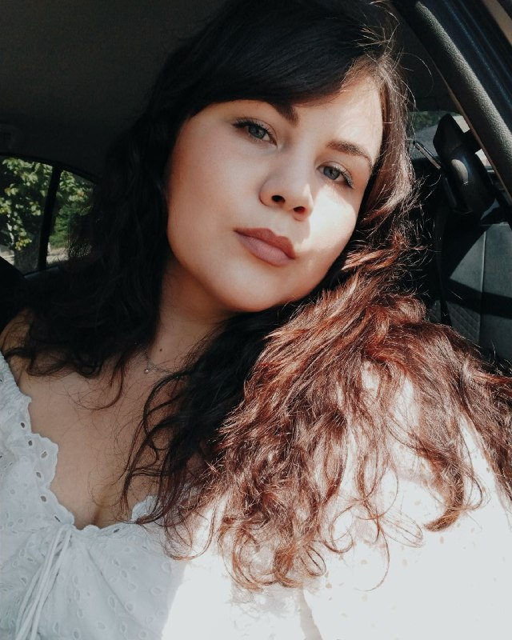

Мой первый сайт
Главная страница
Мои контакты
Изображения
Обо мне

Привет! Меня зовут Оля, мне 25 лет. Я родилась, выросла и живу в г.Одесса.
По образованию я архитектор. Являюсь сооснователем студии OM.MY Design
и по совместительству главным дизайнером-визуализатором. Мое знакомство
с 3ds max началось уже очень давно. Пройдя долгий путь обучения,
методом проб и ошибок, я пришла к тому, что могу воплотить любое пожелание заказчика в
фотореалистичную визуализацию, а далее и в жизнь! Сейчас я осваиваю новую для себя сферу
деятельности и прохожу курс по Front End.
Образование
- Одесская государственная академия строительства и архитектуры. Архитектурно-художественный институт.Степень магистра
Курсы
- Курс интерьерной визуализации в школе Ильи Изотова
Навыки
- Проведение обмерных работ и составление обмерного плана;
- Разработка эскизного проекта и его согласование;
- Создание 3д визуализаций;
- Разработка пакета чертежей;
- Проведение авторского надзора.
Качества
- Коммуникабельность;
- Ответственность;
- Внимательность к деталям;
- Художественный вкус;
- Организаторские способности.
Мои социальные сети
- Instagram
- Facebook
- Telegram
- Instagram